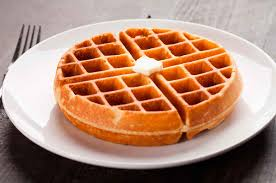
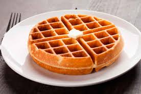

Portfolio
Finalidad del proyecto
La finalidad del proyecto es que nosotros aprendamos como hacer una página web para distintos tipos de personas. Pero además también tenemos que aprender a trabajar en grupo y saber cómo organizarnos.

Encuentro con los de cuarto año
El encuentro con los de 4º nos gusto bastante pero nos pareció muy largo. Aprendimos bastante sobre como disminuir sal, grasas etc. y a la mayoría nos sirvió mucho aunque fue difícil para tomar todos los apuntes. Pudimos aplicarlo en las recetas pero en algunas nos hizo confundir un poco. Los que nos explicaban se les entendía muy bien.


Logo
El logo de nuestro equipo dice “I-food” y tiene un sombrero de chef porque nos parecio que significaba algo divertido pero tambien serio. Este logo combina muy bien con nustro slogan. Nuestro slogan dice “La comida es lo importante”. Porque queremos que sepan que nos importa que todos coman bien. Elegimos algo no tan elegante porque es un catering para un comedor de colegio.

Seleccion de recetas
Para elegir los menús tardamos un poco porque queríamos tener comida para distintos tipos de personas pero que no sean parecidos como por ejemplo: veganos y vegetarianos, pero al final lo logramos.Tenemos menus muy variados y aunque no sean muy economicos son perfectos para cada tipo de persona. Estos son para hipertensos, para celiacos y para personas sin ningun tipo de problema elegimos un menu muy rico que lo titulamos internacional porque tiene una variedad de comidas de distintos paises. Para lograr esto nos ayudaron los chicos de 4to en el encuentro


 



Video tutorial
Para el video tutorial elegimos el plato nachos con guacamole y nos organizamos un dia en el colegio. Decidimos cuando, donde y como hacerlo. Lo hicimos en la casa de Albertina Z. el domingo 3/11. Sacamos fotos de las etapas de la preparación, grabamos una voz en off en inglés y colocamos subtitulos en español. Para editarlo usamos la aplicación Video Maker. Primero juntamos los ingredientes y nos pusimos a cocinar. Mientras sacabamos fotos íbamos preparando el plato. Cuando lo terminamos, lo editamos. Colaboramos: Valentina J., Albertina Z., Martin J. y Joaquín G. (La casa, el limón, el tomate, las paltas, la sal y la pimienta y el cilantro de Albertina, el celular de Valentina, nachos de Martin y cebolla de Joaquín).


Descripción de cálculo de costos y precios finales
Tres integrantes del grupo realizaron dos planillas de cálculos, y el cuarto hizo tres. Lo hicimos el 12/11 usando Excel. El Excel estaba compartido con todos los integrantes del grupo. Cada uno eligió una receta, escribimos los ingredientes en el Excel y buscamos en Mercado Libre, Carrefour digital o Coto digital los precios del ingrediente y lo escribimos en la tabla. Tuvimos un encuentro con los chicos de 6to año en el que nos ayudaron a calcular la ganancia del plato.